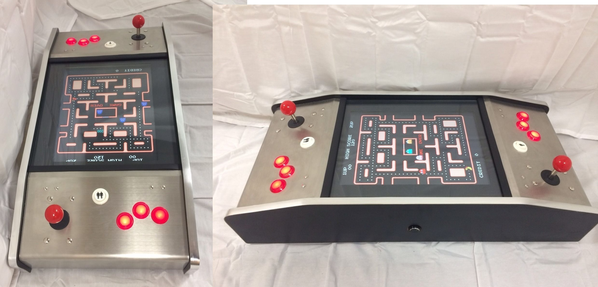
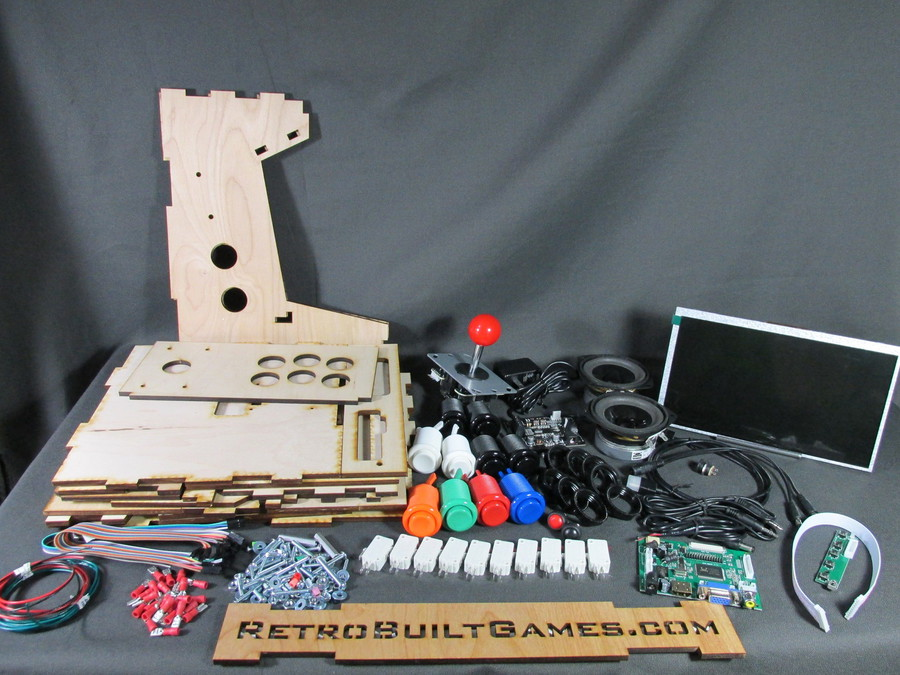
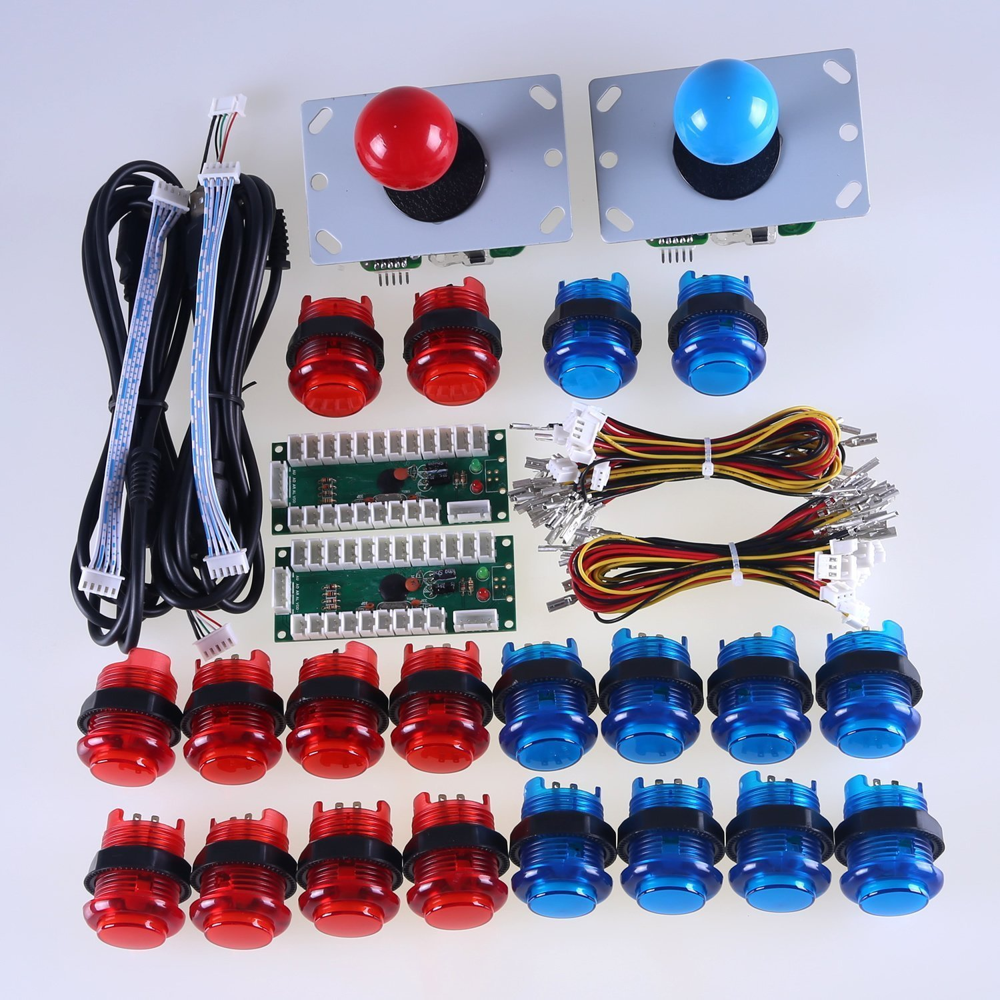
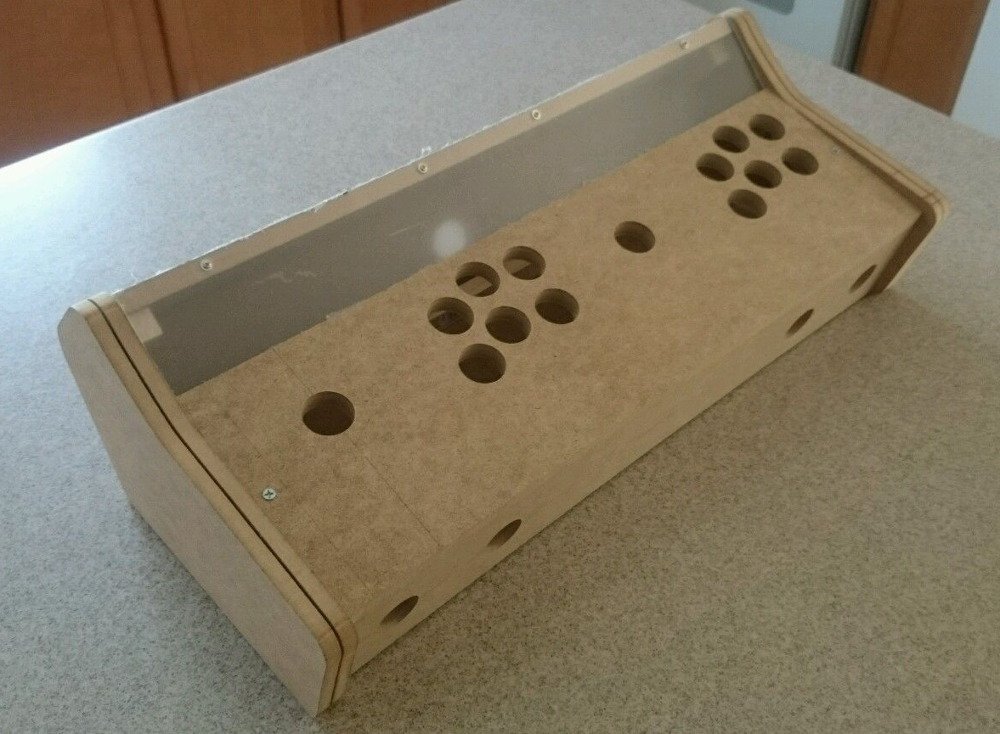
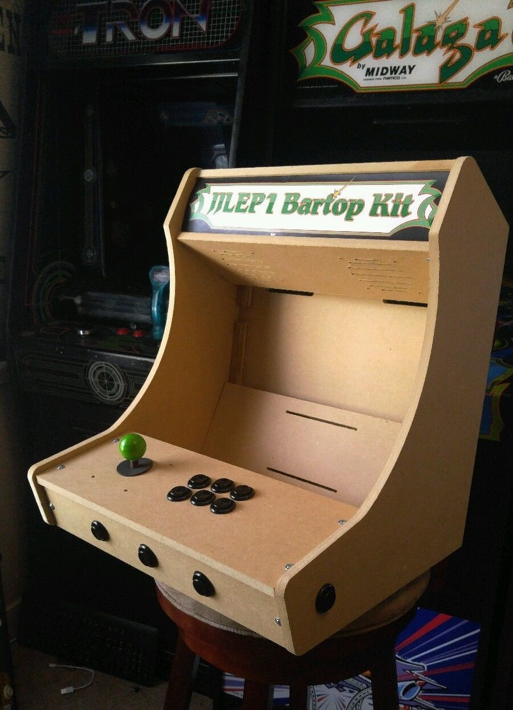

The Raspberry Pi Has Revolutionized Emulation
Every geek goes through a phase where they discover emulation. It's practically a rite of passage.
I think I spent most of my childhood – and a large part of my life as a young adult – desperately wishing I was in a video game arcade. When I finally obtained my driver's license, my first thought wasn't about the girls I would take on dates, or the road trips I'd take with my friends. Sadly, no. I was thrilled that I could drive myself to the arcade any time I wanted.
My two arcade emulator builds in 2005 satisfied my itch thoroughly. I recently took my son Henry to the California Extreme expo, which features almost every significant pinball and arcade game ever made, live and in person and real. He enjoyed it so much that I found myself again yearning to share that part of our history with my kids – in a suitably emulated, arcade form factor.
Down, down the rabbit hole I went again:

I discovered that emulation builds are so much cheaper and easier now than they were when I last attempted this a decade ago. Here's why:
The ascendance of Raspberry Pi has single-handedly revolutionized the emulation scene. The Pi is now on version 3, which adds critical WiFi and Bluetooth functionality on top of additional speed. It's fast enough to emulate N64 and PSX and Dreamcast reasonably, all for a whopping $35. Just download the RetroPie bootable OS on a $10 32GB SD card, slot it into your Pi, and … well, basically you're done. The distribution comes with some free games on it. Add additional ROMs and game images to taste.
Chinese all-in-one JAMMA cards are available everywhere for about $90. Pandora's Box is one "brand". These things are are an entire 60-in-1 to 600-in-1 arcade on a board, with an ARM CPU and built-in ROMs and everything … probably completely illegal and unlicensed, of course. You could buy some old broken down husk of an arcade game cabinet, anything at all as long as it's a JAMMA compatible arcade game – a standard introduced in 1985 – with working monitor and controls. Plug this replacement JAMMA box in, and bam: you now have your own virtual arcade. Or you could build or buy a new JAMMA compatible cabinet; there are hundreds out there to choose from.
Cheap, quality IPS arcade size LCDs. The CRTs I used in 2005 may have been truer to old arcade games, but they were a giant pain to work with. They're enormous, heavy, and require a lot of power. Viewing angle and speed of refresh are rather critical for arcade machines, and both are largely solved problems for LCDs at this point, which are light, easy to work with, and sip power for $100 or less.
Add all that up – it's not like the price of MDF or arcade buttons and joysticks has changed substantially in the last decade – and what we have today is a console and arcade emulation wonderland! If you'd like to go down this rabbit hole with me, bear in mind that I've just started, but I do have some specific recommendations.
Get a Raspberry Pi starter kit. I recommend this particular starter kit, which includes the essentials: a clear case, heatsinks – you definitely want small heatsinks on your 3, as it dissipate almost 4 watts under full load – and a suitable power adapter. That's $50.
Get a quality SD card. The primary "drive" on your Pi will be the SD card, so make it a quality one. Based on these excellent benchmarks, I recommend the Sandisk Extreme 32GB or Samsung Evo+ 32GB models for best price to peformance ratio. That'll be $15, tops.
Download and install the bootable RetroPie image on your SD card. It's amazing how far this project has come since 2013, it is now about as close to plug and play as it gets for free, open source software. The install is, dare I say … "easy"?
Decide how much you want to build. At this point you have a fully functioning emulation brain for well under $100 which is capable of playing literally every significant console and arcade game created prior to 1997. Your 1985 self is probably drunk with power. It is kinda awesome. Stop doing the Safety Dance for a moment and ask yourself these questions:
What controls do you plan to plug in via the USB ports? This will depend heavily on which games you want to play. Beyond the absolute basics of joystick and two buttons, there are Nintendo 64 games (think analog stick(s) required), driving games, spinner and trackball games, multiplayer games, yoke control games (think Star Wars), virtual gun games, and so on.
What display to you plan to plug in via the HDMI port? You could go with a tiny screen and build a handheld emulator, the Pi is certainly small enough. Or you could have no display at all, and jack in via HDMI to any nearby display for whatever gaming jamboree might befall you and your friends. I will say that, for whatever size you build, more display is better. Absolutely go as big as you can in the allowed form factor, though the Pi won't effectively use much more than a 1080p display maximum.
How much space do you want to dedicate to the box? Will it be portable? You could go anywhere from ultra-minimalist – a control box you can plug into any HDMI screen with a wireless controller – to a giant 40" widescreen stand up arcade machine with room for four players.
What's your budget? We've only spent under $100 at this point, and great screens and new controllers aren't a whole lot more, but sometimes you want to build from spare parts you have lying around, if you can.
Do you have the time and inclination to build this from parts? Or do you prefer to buy it pre-built?
These are all your calls to make. You can get some ideas from the pictures I posted at the top of this blog post, or search the web for "Raspberry Pi Arcade" for lots of other ideas.
As a reasonable all-purpose starting point, I recommend the Build-Your-Own-Arcade kits from Retro Built Games. From $330 for full kit, to $90 for just the wood case.

You could also buy the arcade controls alone for $75, and build out (or buy) a case to put them in.


My "mainstream" recommendation is a bartop arcade. It uses a common LCD panel size in the typical horizontal orientation, it's reasonably space efficient and somewhat portable, while still being comfortably large enough for a nice big screen with large speakers gameplay experience, and it supports two players if that's what you want. That'll be about $100 to $300 depending on options.

I remember spending well over $1,500 to build my old arcade cabinets. I'm excited that it's no longer necessary to invest that much time, effort or money to successfully revisit our arcade past.
Thanks largely to the Raspberry Pi 3 and the RetroPie project, this is now a simple Maker project you can (and should!) take on in a weekend with a friend or family. For a budget of $100 to $300 – maybe $500 if you want to get extra fancy – you can have a pretty great classic arcade and classic console emulation experience. That's way better than I was doing in 2005, even adjusting for inflation.
| [advertisement] At Stack Overflow, we put developers first. We already help you find answers to your tough coding questions; now let us help you find your next job. |